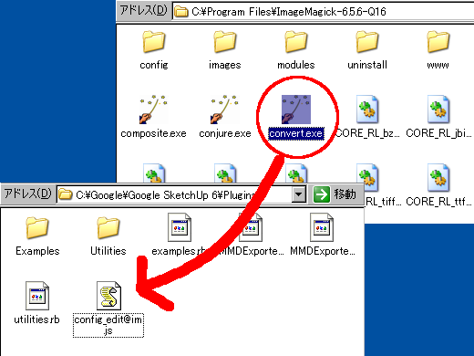
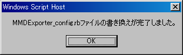
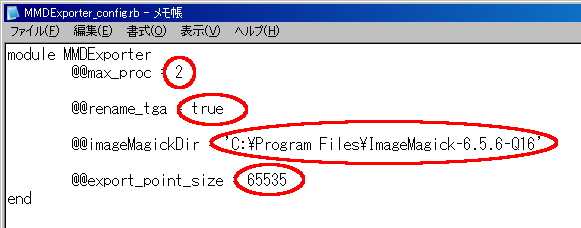

はじめに
この手順はツールの初期設定値を設定する設定ファイルを編集する手順が書かれています。
設定可能な初期設定値は
・画像の変換のために実行しているImageMagicコマンドの最大起動数
・TGA、BMPリネームを行う/行わないのデフォルト設定
・ImageMagickをインストールしたフォルダの設定
・自動分割時のひとつのアクセサリあたりの最大頂点数
の4項目です。
１．Google SketchUpの"Plugins"フォルダとImageMagickをインストールしたフォルダを開きます。
２．ImageMagickをインストールしたフォルダにある"convert.exe"を、Google SketchUpの"Plugins"フォルダにある"config_edit@im.js"にドラッグ＆ドロップします。("indentify.exe"をドラッグ＆ドロップしても処理されます)

３．以下のメッセージが出たら設定完了です。これ以外のメッセージが表示された場合は下記の順に従って手動で設定してください。

４．ImageMagickをインストールしたフォルダの設定は完了です。また、ImageMagickをインストールしたフォルダ以外の項目を設定する場合は下記の手順に従って手動で設定してください。
手動で設定を変更する手順
１．Google SketchUpの"Plugins"フォルダにある"MMDExporter_config.rb"ファイルをメモ帳で開きます。(メモ帳へドラッグ＆ドロップで開くことが出来ます。メモ帳でなく任意のテキストエディタで編集を行ってもかまいません。)
２．以下の画像で赤に囲まれているところが編集出来ます。

| 一番上 | 画像をTGAおよびBMPに変換するときにImageMagickのconvert.exe、identify.exeコマンドを実行しますが、このツールではconvert.exe、identify.exeコマンドを複数個同時に起動することが可能です。最大何個まで起動を許すのかを半角の数字(整数)で記述します。最小値は1、最大値は16まで有効です。この範囲を逸脱した場合は1になります。 |
| 上から二つ目 | ツールを起動したときのウインドウにある"Rename Texture filename"チェックボックスの初期値を設定します。半角の小文字でtrueと記述すると"Rename Texture filename"チェックボックスにチェックが入った状態でウインドウが開きます。半角の小文字でfalseと記述するとチェックボックスにチェックが入っていない状態でウインドウが開きます。trueおよびfalseのみ有効です。これら以外を設定した場合はfalseになります。 |
| 上から三つ目 |
ImageMagickのconvert.exeおよびindentify.exeコマンドがおいてあるフォルダを指定します。convert.exeおよびidentify.exeファイルがインストールされているフォルダのパスをシングルクオーテーション→'で囲って半角で記述してください。エラーになるため最後に\記号はつけないでください。 例 × 'C:\Program Files\ImageMagick-6.5.6-Q16\' ○ 'C:\Program Files\ImageMagick-6.5.6-Q16' 相対パス、絶対パスともに使用可能です。記述されていない場合もしくはパスが有効でない場合はGoogle SketchUpの"Plugins"フォルダおよびシステムのパスからconvert.exeおよびidentify.exeを探します。見つからなかった場合は画像の変換は行いません。 ※判る人向け→ダブルクオーテーションも使用可能ですがパスのセパレータを\\にしてください。設定ツールで編集するとこの形式になります |
| 一番下 | 自動分割時にひとつのアクセサリあたりの最大頂点数を設定します。半角の数字(整数)で記述します。最小値は1、最大値はありません。1未満を設定した場合は65535になります。MMDでは65535より大きく設定するとアクセサリが読み込めません。 |
３．編集が終わったらファイル→保存でファイルを保存します。
４．メモ帳を閉じて設定ファイルの編集は終了です。